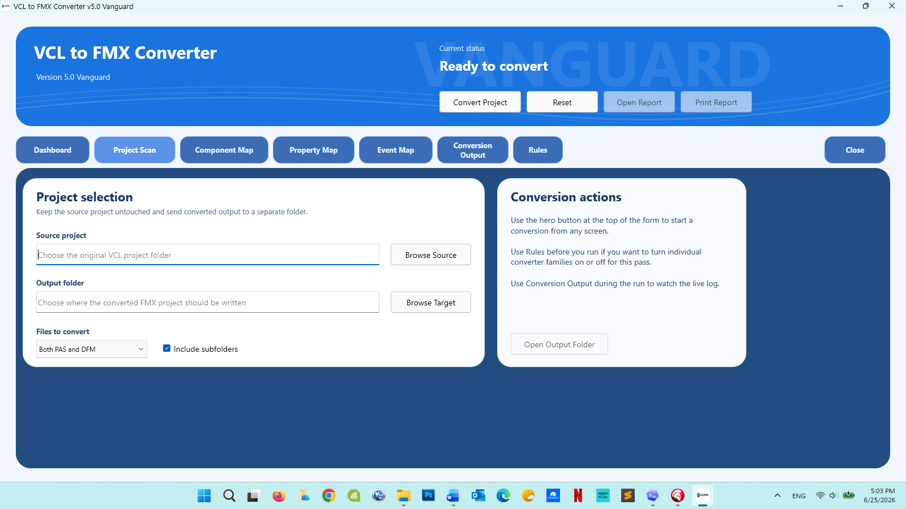

Forms and components
Converts many standard VCL controls to FMX equivalents and preserves layout information where practical.
Open-source Delphi migration utility
VCL2FMXConverter handles much of the repetitive work in a VCL-to-FMX migration—Pascal and DFM analysis, forms, components, properties, events, and project structure—then clearly reports the items that still need a developer's judgment.
Version 5.0 Vanguard
The tabbed interface keeps the source project, conversion rules, live output, and component maps visible without hiding the converter's decisions.

What the converter does
The converter produces an editable FMX-oriented project and an honest report—not a black-box promise of one-click conversion.
Converts many standard VCL controls to FMX equivalents and preserves layout information where practical.
Maps common VCL properties and event names when the translation is safe and meaningful.
Highlights unsupported APIs, Windows-specific code, third-party controls, conversion risks, and work that needs manual review.
Uses 198 focused expectations to guard generated code, report behavior, project integration, and known conversion boundaries.
A practical workflow
Point the converter at a Delphi VCL project. The original project remains the source of truth.
The converter analyzes Pascal and DFM files, applies supported mappings, and generates FMX-oriented output.
Open the generated project in Delphi, work through the report, and validate real application behavior.
Third-party component support
Optional JSON mapping packs can convert simple components, partially convert controls with warnings, detect complex controls, or preserve selected references. Developers can adjust packs without forcing unsafe assumptions into the converter core.
Repeatable engineering safeguards
Each contract is a small Delphi test case plus an expected JSON result. Together they describe the generated Pascal, FMX, project, and report behavior that the converter must produce—or must deliberately avoid. Contracts are engineering safeguards, not files that normal conversions compare against at runtime.
Know the boundaries
Generated output is a migration starting point. Compiling, testing, UI inspection, and programmer review remain essential.
Contact and feedback
Include the converter version, Delphi version, a short project description, and the generated HTML report when possible.